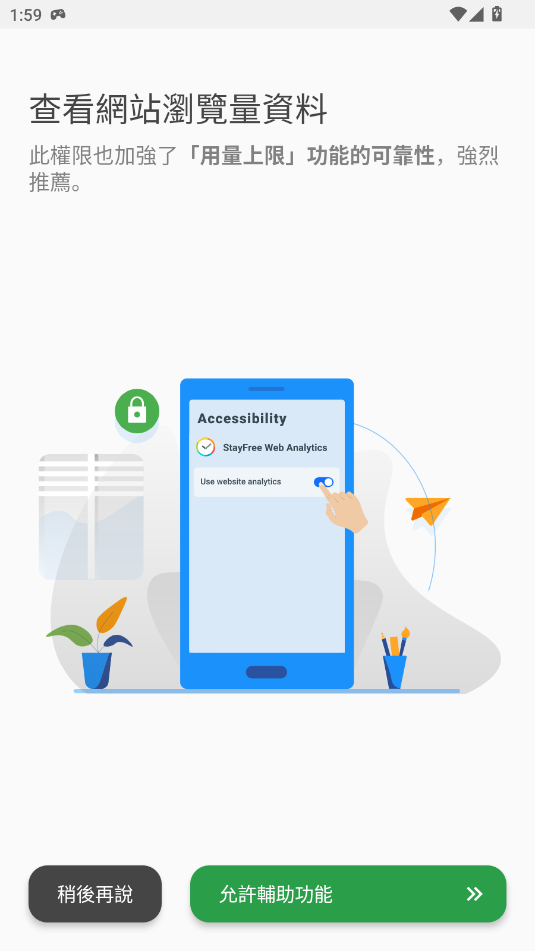

第一次装 StayFree 就能上手，这篇带你从零开始管住手机时间
还在被短视频和社交媒体牵着走？StayFree 是一款帮你看清屏幕时间、温和戒掉手机瘾的工具。不需要任何基础，跟着这篇五分钟就能跑起来。
这篇能带你从完全不懂到用起来——不需要任何基础，手机上装完就能操作。
它到底是干嘛的？一个生活化类比
你有没有过这种经历：晚上躺在床上本来只想刷两分钟短视频，抬头一看已经过了一个小时；或者以为自己今天手机只用了两小时，结果一查发现加上电脑和平板，一天总共花了快五个小时在屏幕前？
StayFree官网 就是你的"数字生活管家"。它不会像某些应用那样一上来就把你的 App 全封掉让你抓狂，而是先帮你把账单算清楚——今天你在哪些 App 上花了多少时间、哪个时段是你的"时间黑洞"、多台设备加起来总共看了多久屏幕。等你看清了真实情况，再给你一些温和的手段帮你调整：想给某个 App 设个每日上限？想把短视频界面变成黑白让自己没那么想看？或者干脆在晚上来一个"专注模式"暂时告别干扰？StayFree 都能帮你做到。
跟系统自带的屏幕时间追踪相比，StayFree 最大的不同在于它不是一个"统计工具"，而是一个"干预工具"——光看数字不够，它还给你动作。

五分钟上手：从下载到第一次跑通
好，现在拿出你的安卓手机，跟着走一遍，五分钟搞定第一次设置。
第一步：安装应用。 去 StayFree 官网找下载入口，下载安装包装上。安装过程跟普通 App 没区别，一路点确认就行。
第二步：打开应用给权限。 第一次启动会弹出一串权限请求——别慌，每一个都得给，缺一个功能就缺一块。最关键的两个是"屏幕使用情况访问权限"（不然它拿不到你用了哪些 App 的数据）和"辅助功能权限"（用来实现黑白模式、隐藏模块这些 In-App 精细化拦截）。系统设置页会自动跳过去，打开对应开关再回到 StayFree 就行。
第三步：看一眼仪表盘。 权限都给完之后，StayFree 会自动开始追踪。打开应用你会看到仪表盘——顶部一个大大的数字是今天到现在为止的总屏幕时间，下面是各个 App 的用量排行。如果是刚装的，前面的数据还没积累，数字会比较小，别担心，过一天数据就全了。
第四步：给一个 App 设个限制试试。 找一个你觉得自己用太多的 App，比如短视频或者社交媒体，点它 → 选"每日限制" → 设一个你觉得合理的时长，比如 1 小时。设完之后这个 App 在你手机上就会出现一个倒计时条，时间一到就提醒你。
就这四步，五分钟搞定。你已经成功让 StayFree 在工作了。
上手后先玩这三个功能
权限给完、第一个限制设好之后，别急着去折腾那些进阶选项。先把这三个功能摸一遍——它们是新手最值得先碰的，每一个都能让你立刻感受到 StayFree 的价值。
第一个：每日用量趋势图——看懂你的时间节奏
仪表盘上除了 App 排行，还有一张折线图。横轴是从早到晚的时间，纵轴是你累计花的屏幕时间。曲线越陡的地方，说明你在那个时段刷得越猛。
你会发现什么？通常大家的高峰出现在几个固定时段：早上通勤、午休吃饭、还有晚上下班到睡前那几个小时。找到这些高峰很重要——如果你的曲线每天晚上十点到十二点那段特别陡，那你就知道应该在那个时段给自己的短视频 App 加个定时拦截或者开个专注模式。
别担心第一次看这张图可能看不懂，曲线越陡 = 用得越多，就这么简单。还可以切换到"本周"或"本月"视图看多天趋势，说不定能发现工作日和周末的用量差别特别大。
第二个：黑白模式——把彩色 App 变成灰色
这是我觉得 StayFree 最有意思也最有体感的一个功能。
打开方式：找到你想降瘾的 App（比如 YouTube、TikTok、Instagram 这些），进入它的 In-App Blocker 设置，里面有个"黑白模式"开关。打开之后，这个 App 的整个界面就从彩色变成灰度了——彩色缩略图变成灰色，跳动的 Like 动画没了色彩，连滤镜效果也看不出区别。
你会发现什么？原本刷起来眼睛离不开的内容，突然就没那么吸引你了。研究说黑白界面能让用户在短视频平台上的停留时间减少三到五成——不需要硬性拦截，只是把视觉吸引力降下来。如果你不想把某个 App 完全封掉，但又觉得自己每次都停不下来，黑白模式是一个特别温和的选项。

第三个：跨设备总览——直面真实的数字
如果家里还有平板或者电脑，一定要试试跨设备配对这个功能。配完之后仪表盘上会多出一个切换入口，可以在"本机"和"全部设备"之间切。
切换到"全部设备"，你会看到一个让很多人震惊的数字——原来你以为手机今天只用了两小时，加上电脑一小时四十五分钟和平板半小时，总共有四个多小时。大多数人只记得自己在一台设备上花的时间，忽略了多台设备叠加起来的总量。
而且同一个网站或 App 在多台设备上的用量会自动合并——你电脑上 YouTube 花了四十五分钟，手机 App 上又花了一小时，合并后就是一小时四十五分钟，排名直接冲到前面。单设备的数字很容易产生错觉："我今天手机只用了两小时，挺好的"——但合并后的数字会逼你直面真实情况。
小白的三个常见疑问
最后回答几个第一次用 StayFree 的人最常问的问题，来自StayFree文档里的 FAQ 和排查内容。
后台音视频会不会被算进屏幕时间？
会的，默认设置下手机在后台播放的视频或音乐也会被计入用量。如果你只是开着音乐做家务，或者把视频放后台当背景音，这些时间会让你的趋势图看起来偏高。解决办法很简单：去设置里找到"后台音视频标签追踪"，或者把对应的播放 App 加到"忽略清单"里，它们的后台活动就不会被追踪了。
黑白模式为什么在我手机上不生效？
黑白模式的渲染依赖 StayFree 的辅助功能权限和各平台的 API 支持。首先检查一下辅助功能权限有没有正确授予——打开系统设置，找到无障碍或辅助功能，确认 StayFree 的开关是打开的。另外某些旧版本的 App 或者特定型号的设备上可能确实不支持，这属于正常的局限性，可以退回到模块隐藏（直接把 Reels、Shorts 这些模块入口隐藏掉）或者传统的每日限制。
免费版够不够用？
对绝大多数人来说，免费版完全够用。核心的屏幕时间追踪、每日限制、专注模式、In-App 精细化拦截、跨设备同步这些功能全在免费版里。Premium 订阅主要是几个锦上添花的增量：去掉广告、解锁无限清单创建、个别版本还有翻译器和签到追踪能力。升级不升级的判断标准很简单——免费版里有什么东西让你觉得不够用了吗？如果广告没太打扰你、清单数量上限也没卡住你，那就一直用免费版好了。
好了，这篇应该能帮你把 StayFree 的核心玩法摸清楚。下一步如果你想深挖，比如研究一下专注模式的高级配置、或者学习怎么写自定义的黑白模式规则，StayFree 文档里有完整的进阶指南可以继续翻。
我把 StayFree 的资料同步维护在三个仓库里：GitHub 是主仓库，Gitee 和 GitCode 方便国内用户直接访问，内容是一致的。